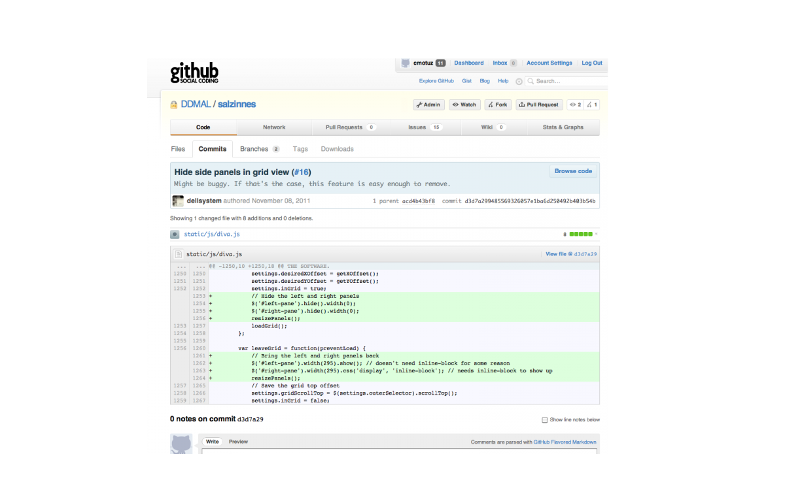
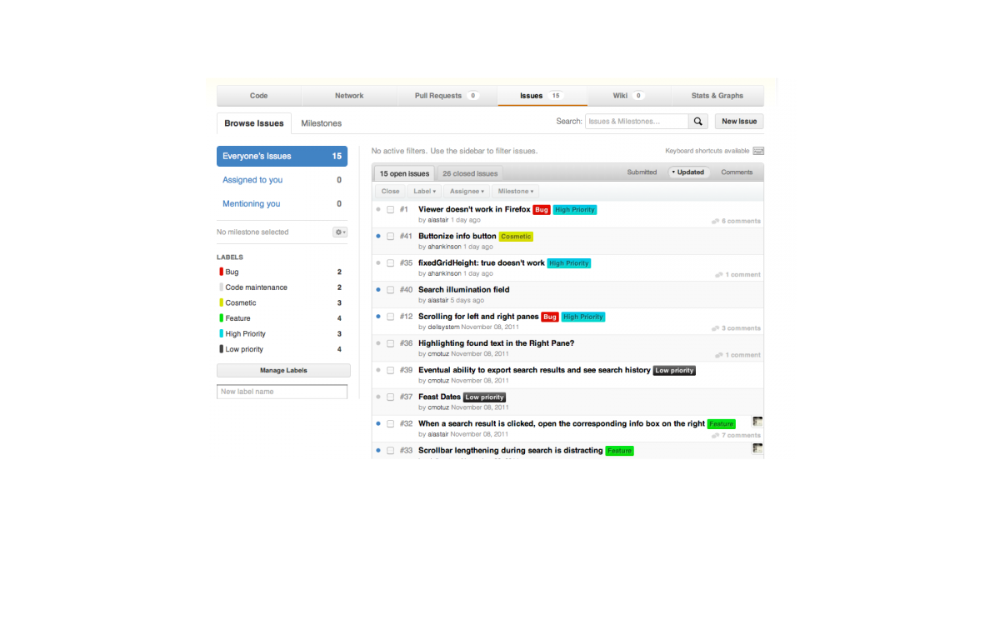
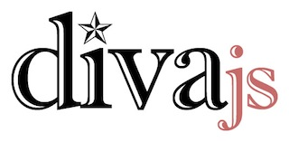

Social Coding
Posted by cmotuz on November 17, 2011
Last week the Salzinnes project made its first public appearance in a series of presentations at the AMS Conference in San Francisco. The responses have been encouraging, ranging from appreciation of the diva interface as a tool for working with manuscripts to offers to help us get connected with other libraries and collections to provide us with other sources that we might incorporate into the project.
Last week the lab was in a flurry of activity getting the demo ready, working out bugs and making it more pleasing to the eye. How it all came together made me wonder how five programmers can coordinate to get a piece of code up and functioning. There’s already a bit of banter across the lab floor, but with complex files, the need to concentrate in a relatively quiet lab, and busy schedules where some things wind up being done on weekends or outside office hours, there has to be a way of coordinating developments and raising issues that doesn’t fill everyone’s email inbox to impossible levels. The answer is github.com.
Github is a repository for all of the source code that goes into the Salzinnes browser. Anyone on the team here can edit the code and commit their changes to the master copy. What is especially clever about this central repository is that, unlike a simple networked file directory where an updated version fully replaces the version that came before, git (the system behind github) takes only new modifications and applies them to the master file. This means that if Andrew and Alastair both work on the same file in one afternoon and both commit their changes at 5 pm, the system will integrate both of their sets of changes. Only if they’ve changed the same lines of code will the system ask them to choose which version to prioritize. As soon as a change is made, it’s logged so that everyone else on the team can take a look. Here Wendy has added a feature, and github shows everyone exactly what she’s done: 
The “#16” beside her title points to the other great thing about github, and where I’m more involved as a musicologist: the issues section. Here every suggestion for improvement of the Salzinnes image browser, whether cosmetic, functional, important, or fleeting, gets put into a to-do list. Programmers can then appropriate issues to work on, address them and close them again if they’re simple bugs or features, or open them up for discussion. Here’s what the issue list looks like today:

The flagging of priority is important: some issues, like making the code compatible with other browsers, is being worked on right now, while my fleeting idea of being able to export search results - a rather involved process in terms of programming - can stay on the list with a low priority tag until either someone is feeling ambitious on a rainy day or until the Salzinnes image browser is being used in the real world enough to warrant the time and energy it will take to implement it.
When changes are made, whether to add code to a file or to change it, github saves a new version but also keeps the old one, so that while everyone’s skill contributes to the project, the accidental introduction of a bug is easy enough to get rid of by reverting to a previous version. Last week, when we were all working toward the common goal of getting a demo version of the Salzinnes browser ready, github proved to be an indispensable tool for facilitating teamwork.
In other news, it was difficult to leave the lab last Wednesday when Greg and Andrew were in a moment of creative bloom, thinking up ideas for the diva.js logo. Here’s what they settled on in the end - you saw it here first!

Next week stay tuned for news about how we’re trying to speed up the computer’s process of recognizing neumes, and how we’ll be making the Liber search display it’s results in a more intuitive way.